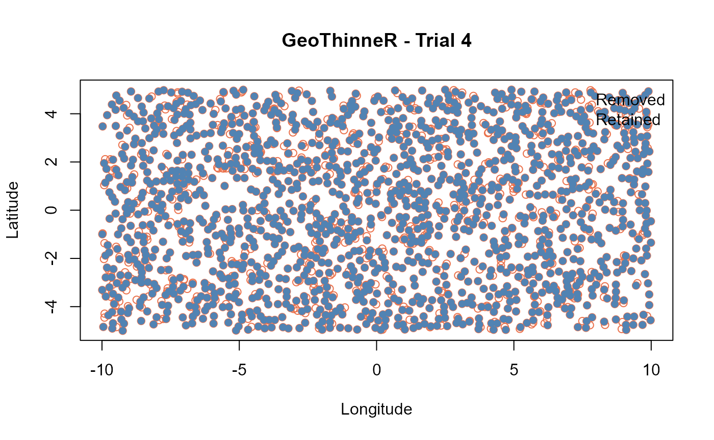
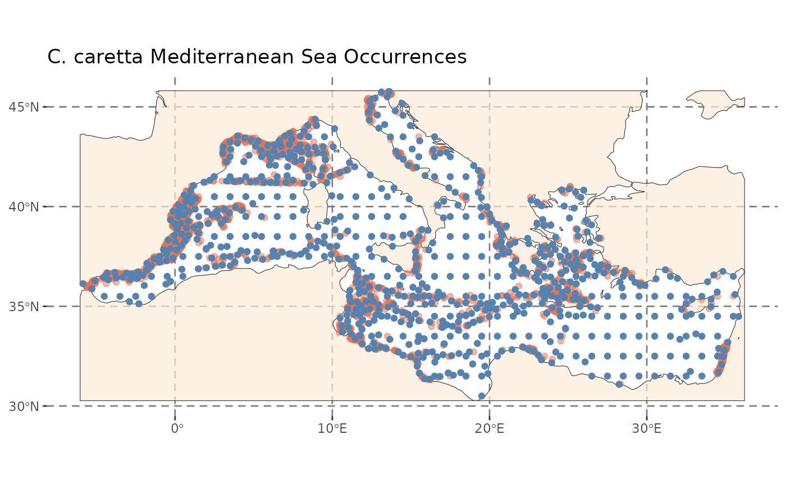
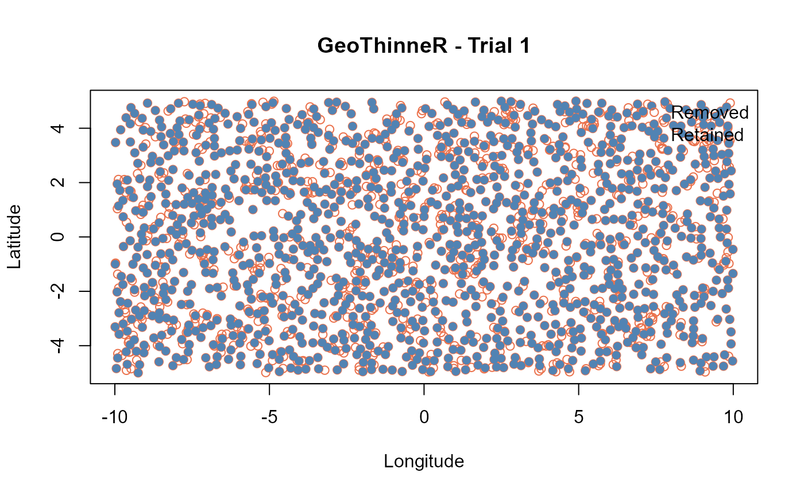
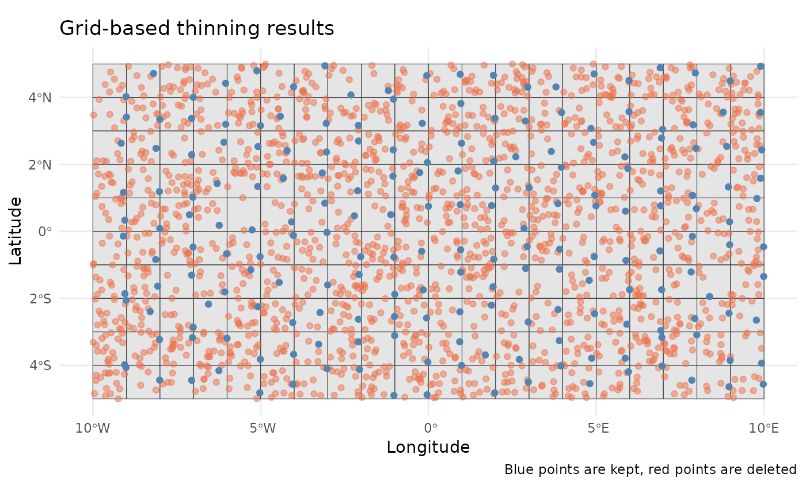
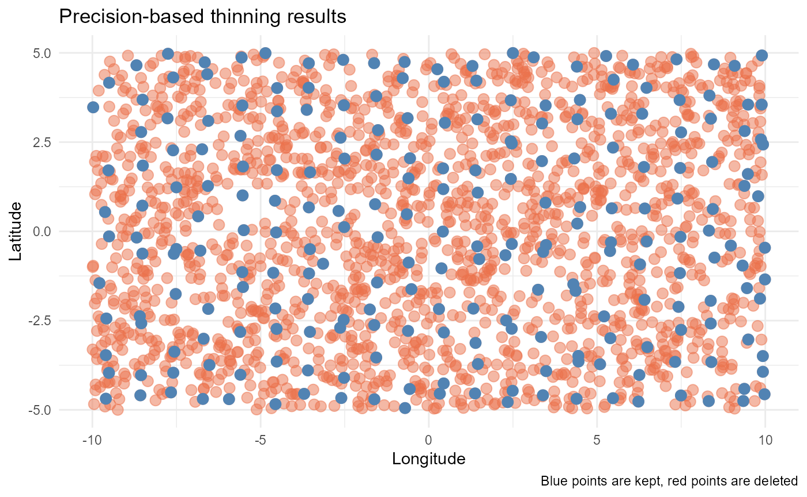
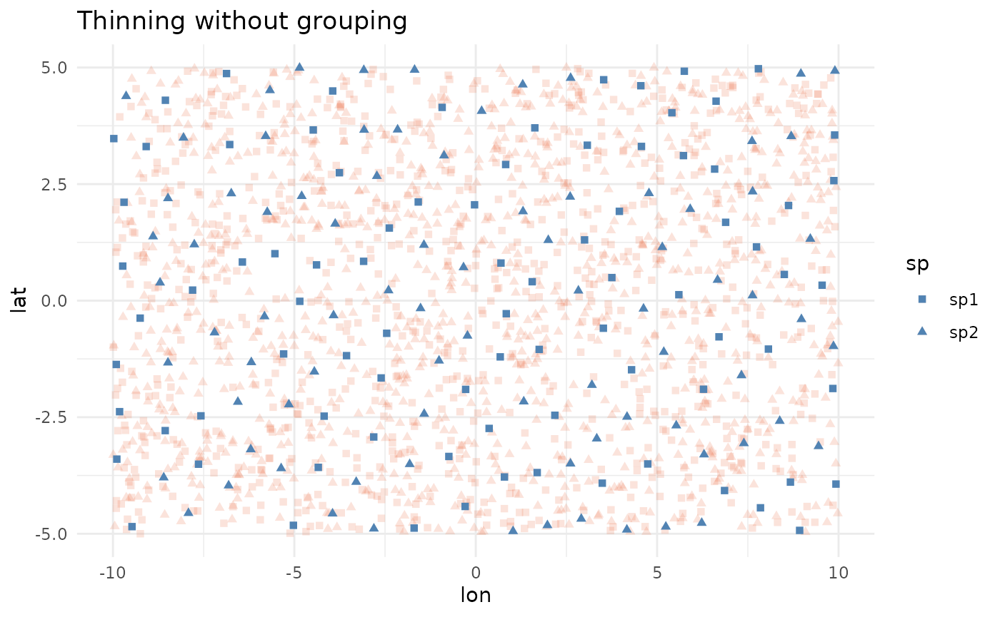
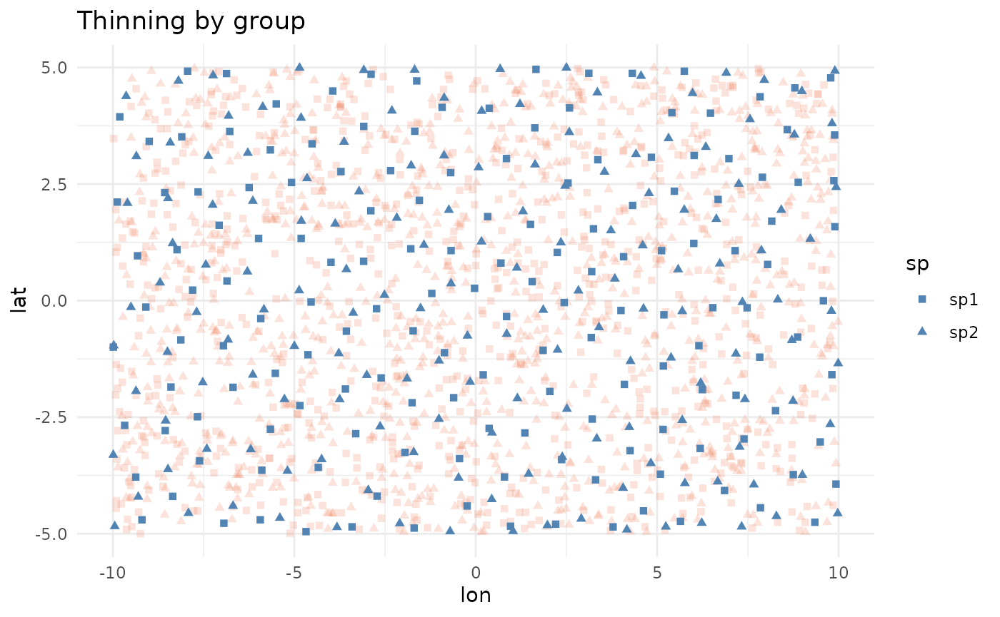
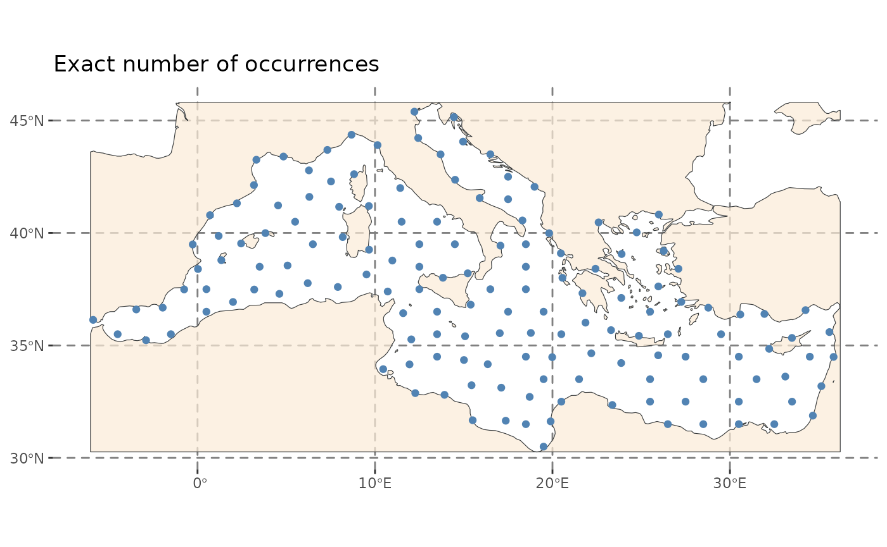

Overview
GeoThinneR is an R package designed for efficient spatial thinning of point data, particularly useful for species occurrence data and other spatial analyses. It implements optimized neighbor search algorithms based on kd-trees, providing an efficient, scalable, and user-friendly approach. When working with large-scale datasets containing hundreds of thousands of points, applying thinning manually is not possible, and existing tools in R providing thinning methods for species distribution modeling often lack scalability and computational efficiency.
Spatial thinning is widely used across many disciplines to reduce the density of spatial point data by selectively removing points based on specified criteria, such as threshold spacing or grid cells. This technique is applied in fields like remote sensing, where it improves data visualization and processing, as well as in geostatistics, and spatial ecological modeling. Among these, species distribution modeling is a key area where thinning plays a crucial role in mitigating the effects of spatial sampling bias.
This vignette provides a step-by-step guide to thinning with GeoThinneR using both simulated and real-world datasets.
Setup and loading data
To get started with GeoThinneR, we begin by loading the packages used in this vignette:
We’ll use two dataset to demonstrate the use of GeoThinneR:
- A simulated a dataset with
n = 2000random occurrences randomly distributed within a 20 x 10 degree area for two artificial species. - A real-world dataset containing loggerhead sea turtle (Caretta caretta) occurrences in the Mediterranean Sea downloaded from GBIF and included with the package.
# Set seed for reproducibility
set.seed(123)
# Simulated dataset
n <- 2000
sim_data <- data.frame(
lon = runif(n, min = -10, max = 10),
lat = runif(n, min = -5, max = 5),
sp = sample(c("sp1", "sp2"), n, replace = TRUE)
)
# Load real-world occurrence dataset
data("caretta")
# Load Mediterranean Sea polygon
medit <- system.file("extdata", "mediterranean_sea.gpkg", package = "GeoThinneR")
medit <- sf::st_read(medit)Let’s visualize the datasets before thinning:


Quick start guide
Now that our data is ready, let’s use GeoThinneR for
spatial thinning. All methods are accessed through the
thin_points() function, which requires, at a minimum, a
dataset containing georeferenced points (WGS84 CRS - EPSG:4326) in
matrix, data.frame, or tibble
format. The query dataset is provided through the data
argument, and with lon_col and lat_col
parameters, we can define the column names containing longitude and
latitude (or x, y) coordinates. Default values are “lon” and “lat”, and
if not present, it will take the first two columns by default.
The thinning method is defined using the
method parameter, with the following options:
-
"distance": Distance-based thinning
-
"grid": Grid-based thinning
-
"precision": Precision-based thinning
The thinning constraint (distance, grid resolution or decimal precision) depends on the method chosen (these will be detailed in the next section). Regardless of the method, the algorithm selects which points to retain and remove. Since this selection is non-deterministic, you can run multiple randomized thinning trials to maximize the number of retained points.
Let’s quickly thin the simulated dataset using a simple distance-based method:
# Apply spatial thinning to the simulated data
quick_thin <- thin_points(
data = sim_data, # Dataframe with coordinates
lon_col = "lon", # Longitude column name
lat_col = "lat", # Latitude column name
method = "distance", # Method for thinning
thin_dist = 20, # Thinning distance in km,
trials = 5, # Number of trials
all_trials = TRUE, # Return all trials
seed = 123 # Seed for reproducibility
)
quick_thin
#> GeoThinned object
#> Method used: distance
#> Number of trials: 5 (5 trials returned)
#> Points retained in largest trial: 1390This command applies spatial thinning ensuring no two retained points
are closer than 20 km (thin_dist). We specified to run 5
random trials (trials). By default, it returns only the
trial that retains the largest subset of points, but because we set
all_trials = TRUE, all trials are returned.
Exploring the GeoThinned object
The output of thin_points() is a GeoThinned
object, which contains: - x$retained: a list of logical
vectors indicating which points were retained in each trial -
x$method: the method used for thinning -
x$params: the parameters used for thinning -
x$original_data: the original dataset
You can apply basic methods for inspecting the object such as
print(), summary(), and plot().
The summary() function provides detailed information about
the thinning process, including the number of points retained after
thinning, the nearest neighbor distance (NND), and the spatial coverage
of the retained points. By default, the summary shows the metrics for
the trial that retains the largest number of points, but you can also
specify a specific trial using the trial argument.
summary(quick_thin)
#> Summary of GeoThinneR Results
#> -----------------------------
#> Trial summarized : 1
#> Method used : distance
#> Distance metric : haversine
#>
#> Number of points:
#> Original 2000
#> Thinned 1390
#> Retention ratio 0.695
#>
#> Nearest Neighbor Distances [km]
#> Min 1st Qu. Median Mean 3rd Qu. Max
#> Original 0.650 11.011 17.159 18.216 24.265 61.83
#> Thinned 20.015 23.205 26.774 28.098 31.418 61.83
#>
#> Spatial Coverage (Convex Hull Area) [km2]
#> Original 2458025.112
#> Thinned 2452182.016We see that from 2000, we retained the 69.5% of points (1390), and the minimum distance between points has increased without reducing too much the spatial coverage or extent of the points compared to the original dataset.
plot(quick_thin)
If we check the number of points retained in each trial, we can see
that the 5 trials return different numbers of points retained. This is
due to the randomness of the algorithm when selecting which points to
retain. You can use seed for reproducibility. By setting,
all_trials = FALSE it will just return the trial that kept
the most points.
# Number of kept points in each trial
sapply(quick_thin$retained, sum)
#> [1] 1390 1388 1388 1388 1387You can access the thinned dataset that retained the maximum number
of points using the largest() function.
head(largest(quick_thin))
#> lon lat sp
#> 1 -4.2484496 -3.4032602 sp2
#> 2 5.7661027 -3.5548415 sp2
#> 3 -1.8204616 -3.5081961 sp2
#> 4 7.6603481 0.1443426 sp1
#> 6 -9.0888700 1.1634277 sp1
#> 7 0.5621098 -0.5257711 sp1If you want to access points from a specific trial, you can use the
get_trial() function, which returns the thinned dataset for
that trial.
head(get_trial(quick_thin, trial = 2))
#> lon lat sp
#> 1 -4.2484496 -3.4032602 sp2
#> 3 -1.8204616 -3.5081961 sp2
#> 4 7.6603481 0.1443426 sp1
#> 6 -9.0888700 1.1634277 sp1
#> 7 0.5621098 -0.5257711 sp1
#> 8 7.8483809 -4.4432328 sp1Just in case you want to get the points that were removed from the
original dataset, you can use the retained list to index
the original data. The retained list contains logical
vectors indicating which points were retained in each trial. You can use
this to filter the original data and get the removed points.
trial <- 2
head(quick_thin$original_data[!quick_thin$retained[[trial]], ])
#> lon lat sp
#> 2 5.766103 -3.55484149 sp2
#> 5 8.809346 -0.07172694 sp1
#> 11 9.136667 3.50963224 sp2
#> 20 9.090073 -4.96464505 sp2
#> 21 7.790786 4.97424144 sp1
#> 23 2.810136 4.97688745 sp1Also, you can use as_sf() to convert the thinned dataset
to a sf object, which is useful for plotting and spatial
analysis.
Real-world example
GeoThinneR includes a dataset of loggerhead sea turtle (Caretta
caretta) occurrence records in the Mediterranean Sea, sourced from
GBIF and filtered. We now apply a 30 km thinning distance, returning
only the largest trial (the one with the maximum number of points
retained, all_trials set to FALSE).
# Apply spatial thinning to the real data
caretta_thin <- thin_points(
data = caretta, # We will not specify lon_col, lat_col as they are in position 1 and 2
lat_col = "decimalLatitude",
lon_col = "decimalLongitude",
method = "distance",
thin_dist = 30, # Thinning distance in km,
trials = 5,
all_trials = FALSE,
seed = 123
)
# Thinned dataframe stored in the first element of the retained list
identical(largest(caretta_thin), get_trial(caretta_thin, 1))
#> [1] TRUE
As you can see, with GeoThinneR, it’s very easy to apply spatial thinning to your dataset. In the next section we explain the different thinning methods and how to use them, and also the implemented optimizations for large-scale datasets.
Thinning methods
GeoThinneR offers different algorithms for spatial thinning. In this section, we will show how to use each thinning method, highlighting its unique parameters and features.
Distance-based thinning
Distance-based thinning (method="distance") ensures that
all retained points are separated by at least a user-defined minimum
distance thin_dist (in km). For geographic coordinates,
using distance = "haversine" (default) computes
great-circle distances, or alternatively, the Euclidean distance between
3D Cartesian coordinates (depending on the method) to identify
neighboring points within the distance threshold. The algorithm iterates
through the dataset and removes points that are too close to each
other.
In general, the choice of search method depends on the size of the dataset and the desired thinning distance:
-
search_type="brute": Useful for small datasets, low scalability. -
search_type="kd_tree": More memory-efficient, better scalability for medium-sized datasets. -
search_type="local_kd_tree"(default): Faster than"kd_tree"and reduces memory usage. Can be parallelized to improve speed. -
search_type="k_estimation": Very fast when the number of points to remove is low or not very clustered, if not similar or worse than"local_kd_tree".
You can find the benchmarking results for each method in the package manuscript (see references).
dist_thin <- thin_points(sim_data, method = "distance", thin_dist = 25, trials = 3)
plot(dist_thin)
Brute force
This is the most common greedy method for calculating the distance
between points (search_type="brute"), as it directly
computes all pairwise distances and retains points that are far enough
apart based on the thinning distance. By default, it computes the
Haversine distance using the rdist.earth() function from
the fields package. If
distance = "euclidean", it computes the Euclidean distance
instead. The main advantage of this method is that it computes the full
distance matrix between your points. However, the main disadvantage is
that it is very time and memory consuming, as it requires computing all
pairwise comparisons.
brute_thin <- thin_points(
data = sim_data,
method = "distance",
search_type = "brute",
thin_dist = 20,
trials = 10,
all_trials = FALSE,
seed = 123
)
nrow(largest(brute_thin))
#> [1] 1390Traditional kd-tree
A kd-tree is a binary tree that partitions space into
regions to optimize nearest neighbor searches. The
search_type="kd_tree" method uses the
nabor R package to implement kd-trees via the
libnabo library. This method is more memory-efficient
than brute force. Since this implementation of kd-trees is
based on Euclidean distance, when working with geographic coordinates
(distance = "haversine"), GeoThinneR
transforms the coordinates into XYZ Cartesian coordinates. Although this
method scales better than the brute-force method for large datasets,
since we want to identify all neighboring points of each query point,
its performance can still be improved for very large datasets.
kd_tree_thin <- thin_points(
data = sim_data,
method = "distance",
search_type = "kd_tree",
thin_dist = 20,
trials = 10,
all_trials = FALSE,
seed = 123
)
nrow(largest(kd_tree_thin))
#> [1] 1390Local kd-trees
To reduce the complexity of searching within a single huge
kd-tree containing all points from the dataset, we propose a
simple modification: creating small local kd-trees by dividing
the spatial domain into multiple smaller regions, each with its own tree
(search_type="local_kd_tree"). This notably reduces memory
usage, allowing this thinning method to be used for very large datasets
on personal computers. Additionally, you can run in parallel this method
to improve speed using the n_cores parameter.
local_kd_tree_thin <- thin_points(
data = sim_data,
method = "distance",
search_type = "local_kd_tree",
thin_dist = 20,
trials = 10,
all_trials = FALSE,
seed = 123
)
nrow(largest(local_kd_tree_thin))
#> [1] 1390Restricted neighbor search
Another way to reduce the computational complexity of
kd-tree neighbor searches is by limiting the number of
neighbors to find. In the nabor::knn() function, we can
specify the number of neighbors to search for (k). For
spatial thinning, we need to identify all neighbors for each point,
which increases computational cost by setting k to the
total number of points (n). However, with the
search_type="k_estimation" method, we can estimate the
maximum number of neighbors a point can have based on the spatial
density of points, thereby reducing the k parameter. This
method is particularly useful when datasets are not highly clustered, as
it estimates a smaller k value, significantly reducing
computational complexity.
k_estimation_thin <- thin_points(
data = sim_data,
method = "distance",
search_type = "k_estimation",
thin_dist = 20,
trials = 10,
all_trials = FALSE,
seed = 123
)
nrow(largest(k_estimation_thin))
#> [1] 1390Grid-based thinning
Grid sampling is a standard method where the area is divided into a
grid, and n points are sampled from each grid cell. This
method is very fast and memory-efficient. The only drawback is that you
cannot ensure a minimum distance between points. There are two main ways
to apply grid sampling in GeoThinneR: (i) define the
characteristics of the grid, or (ii) pass your own grid as a raster
(terra::SpatRaster).
For the first method, you can use the thin_dist
parameter to define the grid cell size (the distance in km will be
approximated to degrees to define the grid cell size, one degree roughly
111.32 km), or you can pass the resolution of the grid (e.g.,
resolution = 0.25 for 0.25x0.25-degree cells). If you want
to align the grid with external data or covariate layers, you can pass
the origin argument as a tuple of two values (e.g.,
c(0, 0)). Similarly, you can specify the coordinate
reference system (CRS) of your grid (crs).
system.time(
grid_thin <- thin_points(
data = sim_data,
method = "grid",
resolution = 1,
origin = c(0, 0),
crs = "epsg:4326",
n = 1, # one point per grid cell
trials = 10,
all_trials = FALSE,
seed = 123
))
#> user system elapsed
#> 0.018 0.000 0.016
nrow(largest(grid_thin))
#> [1] 200Alternatively, you can pass a terra::SpatRaster object,
and that grid will be used for the thinning process.
rast_obj <- terra::rast(xmin = -10, xmax = 10, ymin = -5, ymax = 5, res = 1)
system.time(
grid_raster_thin <- thin_points(
data = sim_data,
method = "grid",
raster_obj = rast_obj,
trials = 10,
n = 1,
all_trials = FALSE,
seed = 123
))
#> user system elapsed
#> 0.005 0.000 0.003
nrow(largest(grid_raster_thin))
#> [1] 200
Precision thinning
In this approach, coordinates are rounded to a certain precision to
remove points that fall too close together. After removing points based
on coordinate precision, the coordinate values are restored to their
original locations. This is the simplest method and is more of a
filtering when working with data from different sources with varying
coordinate precision. To use it, you need to define the
precision parameter, indicating the number of decimals to
which the coordinates should be rounded.
system.time(
precision_thin <- thin_points(
data = sim_data,
method = "precision",
precision = 0,
trials = 50,
all_trials = FALSE,
seed = 123
))
#> user system elapsed
#> 0.004 0.000 0.003
nrow(largest(precision_thin))
#> [1] 230
These are the methods implemented in GeoThinneR. Depending on your specific dataset and research needs, one method may be more suitable than others.
Additional customization features
Spatial thinning by group
In some cases, your dataset may include different groups, such as
species, time periods, areas, or conditions, that you want to thin
independently. The group_col parameter allows you to
specify the column containing the grouping factor, and the thinning will
be performed separately for each group. For example, in the simulated
data where we have two species, we can use this parameter to thin each
species independently:
all_thin <- thin_points(
data = sim_data,
thin_dist = 100,
seed = 123
)
grouped_thin <- thin_points(
data = sim_data,
group_col = "sp",
thin_dist = 100,
seed = 123
)
nrow(largest(all_thin))
#> [1] 167
nrow(largest(grouped_thin))
#> [1] 319

Fixed number of points
What if you need to retain a fixed number of points that best covers
the area where your data points are located, or for class balancing? The
target_points parameter allows you to specify the number of
points to keep, and the function will return that number of points
spaced as separated as possible. Additionally, you can also set a
thin_dist parameter so that no points closer than this
distance will be retained. Currently, this approach is only implemented
using the brute force method (method = "distance" and
search_type = "brute"), so be cautious when applying it to
very large datasets.
targeted_thin <- thin_points(
data = caretta,
lon_col = "decimalLongitude",
lat_col = "decimalLatitude",
target_points = 150,
thin_dist = 30,
all_trials = FALSE,
seed = 123,
verbose = TRUE
)
#> Starting spatial thinning at 2025-12-16 12:00:02
#> Thinning using method: distance
#> For specific target points, brute force method is used.
#> Thinning process completed.
#> Total execution time: 4.03 seconds
nrow(largest(targeted_thin))
#> [1] 150
Select points by priority
In some scenarios, you may want to prioritize certain points based on
a specific variable, such as coordinate uncertainty, data quality, or
any other variable. The priority parameter allows you to
assign a numeric weight to each point, where higher values indicate
higher importance, and these points are more likely to be retained
during thinning. This feature is available for the
"distance", "grid" and
"precision" methods.
For example, in the sea turtle data downloaded from GBIF, there is a
column named coordinateUncertaintyInMeters. To prioritize
records with lower uncertainty, you can invert the values so that
smaller uncertainties receive higher priority. A simple way to do this
is:
# Invert uncertainty to give more priority to lower uncertainty records
priority <- -caretta$coordinateUncertaintyInMeters
# For example, handle NAs by assigning lowest possible priority
priority[is.na(priority)] <- min(priority, na.rm = TRUE) - 1Then apply thinning using the priority weights:
# Standard grid thinning (no priority)
grid_thin <- thin_points(
data = caretta,
lon_col = "decimalLongitude",
lat_col = "decimalLatitude",
method = "grid",
resolution = 2,
seed = 123
)
# Grid thinning with priority
priority_thin <- thin_points(
data = caretta,
lon_col = "decimalLongitude",
lat_col = "decimalLatitude",
method = "grid",
resolution = 2,
priority = priority,
seed = 123
)
mean(largest(grid_thin)$coordinateUncertaintyInMeters, na.rm = TRUE)
#> [1] 35513.54
mean(largest(priority_thin)$coordinateUncertaintyInMeters, na.rm = TRUE)
#> [1] 138288Notes
- Higher
priorityvalues mean the point is more likely to be retained. - In
"grid"and"precision"methods, when multiple points fall into the same grid cell or rounded coordinate, the one with highest priority is kept. - In the
"distance"method, priority is used to resolve tie situations where multiple points have the same spatial influence; the point with lowest priority is dropped. - If multiple points have the same priority, one is selected at random.
- By default, if provided
NAvalues inpriority, they are treated as the lowest possible priority.
Other Packages
The GeoThinneR package was inspired by the work of many others who have developed methods and packages for working with spatial data and thinning techniques. Our goal with GeoThinneR is to offer additional flexibility in method selection and to address specific needs we encountered while using other packages. We would like to mention other tools that may be suitable for your work:
-
spThin: The
thin()function provides a brute-force spatial thinning of data, maximizing the number of retained points through random iterative repetitions, using the Haversine distance. -
enmSdmX: Includes the
geoThin()function, which calculates all pairwise distances between points for thinning purposes. -
dismo: The
gridSample()function samples points using a grid as stratification, providing an efficient method for spatial thinning.
References
Aiello‐Lammens, M. E., Boria, R. A., Radosavljevic, A., Vilela, B., and Anderson, R. P. (2015). spThin: an R package for spatial thinning of species occurrence records for use in ecological niche models. Ecography, 38(5), 541-545. https://doi.org/10.1111/ecog.01132
Elseberg, J., Magnenat, S., Siegwart, R., & Nüchter, A. (2012). Comparison of nearest-neighbor-search strategies and implementations for efficient shape registration. Journal of Software Engineering for Robotics, 3(1), 2-12. https://hdl.handle.net/10446/86202
Hijmans, R.J., Phillips, S., Leathwick, J., & Elith, J. (2023). dismo: Species Distribution Modeling. R Package Version 1.3-14. https://cran.r-project.org/package=dismo
Mestre-Tomás J (2025). GeoThinneR: Efficient Spatial Thinning of Species Occurrences. R package version 2.0.0, https://github.com/jmestret/GeoThinneR
Smith, A. B., Murphy, S. J., Henderson, D., & Erickson, K. D. (2023). Including imprecisely georeferenced specimens improves accuracy of species distribution models and estimates of niche breadth. Global Ecology and Biogeography, 32(3), 342-355. https://doi.org/10.1111/geb.13628
Session info
sessionInfo()
#> R version 4.5.2 (2025-10-31)
#> Platform: x86_64-pc-linux-gnu
#> Running under: Ubuntu 24.04.3 LTS
#>
#> Matrix products: default
#> BLAS: /usr/lib/x86_64-linux-gnu/openblas-pthread/libblas.so.3
#> LAPACK: /usr/lib/x86_64-linux-gnu/openblas-pthread/libopenblasp-r0.3.26.so; LAPACK version 3.12.0
#>
#> locale:
#> [1] LC_CTYPE=C.UTF-8 LC_NUMERIC=C LC_TIME=C.UTF-8
#> [4] LC_COLLATE=C.UTF-8 LC_MONETARY=C.UTF-8 LC_MESSAGES=C.UTF-8
#> [7] LC_PAPER=C.UTF-8 LC_NAME=C LC_ADDRESS=C
#> [10] LC_TELEPHONE=C LC_MEASUREMENT=C.UTF-8 LC_IDENTIFICATION=C
#>
#> time zone: UTC
#> tzcode source: system (glibc)
#>
#> attached base packages:
#> [1] stats graphics grDevices utils datasets methods base
#>
#> other attached packages:
#> [1] ggplot2_4.0.1 sf_1.0-23 terra_1.8-86 GeoThinneR_2.1.0
#>
#> loaded via a namespace (and not attached):
#> [1] s2_1.1.9 sass_0.4.10 class_7.3-23 KernSmooth_2.23-26
#> [5] digest_0.6.39 magrittr_2.0.4 evaluate_1.0.5 grid_4.5.2
#> [9] RColorBrewer_1.1-3 iterators_1.0.14 fastmap_1.2.0 maps_3.4.3
#> [13] foreach_1.5.2 jsonlite_2.0.0 e1071_1.7-16 DBI_1.2.3
#> [17] spam_2.11-1 viridisLite_0.4.2 scales_1.4.0 codetools_0.2-20
#> [21] textshaping_1.0.4 jquerylib_0.1.4 cli_3.6.5 rlang_1.1.6
#> [25] units_1.0-0 withr_3.0.2 cachem_1.1.0 yaml_2.3.12
#> [29] tools_4.5.2 vctrs_0.6.5 R6_2.6.1 matrixStats_1.5.0
#> [33] proxy_0.4-28 lifecycle_1.0.4 classInt_0.4-11 nabor_0.5.0
#> [37] fs_1.6.6 ragg_1.5.0 desc_1.4.3 pkgdown_2.2.0
#> [41] bslib_0.9.0 gtable_0.3.6 glue_1.8.0 data.table_1.17.8
#> [45] Rcpp_1.1.0 fields_17.1 systemfonts_1.3.1 xfun_0.54
#> [49] knitr_1.50 farver_2.1.2 htmltools_0.5.9 rmarkdown_2.30
#> [53] labeling_0.4.3 wk_0.9.4 dotCall64_1.2 compiler_4.5.2
#> [57] S7_0.2.1